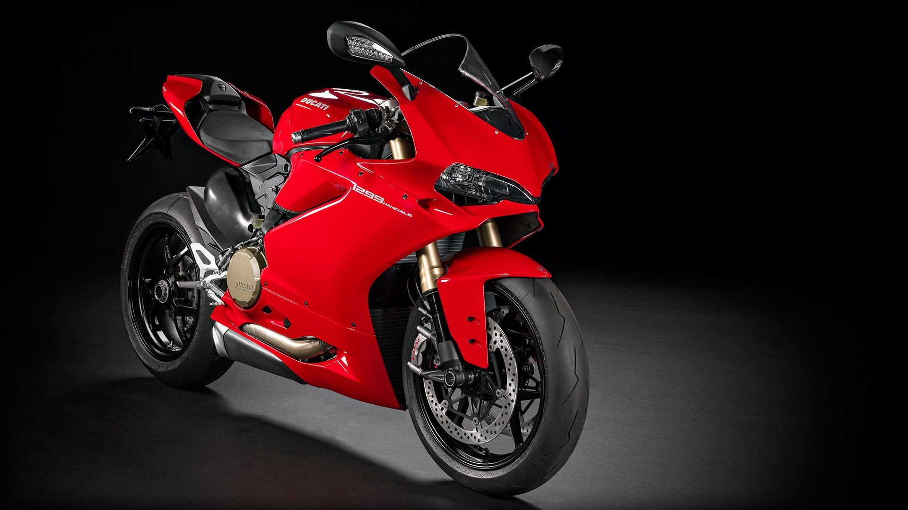
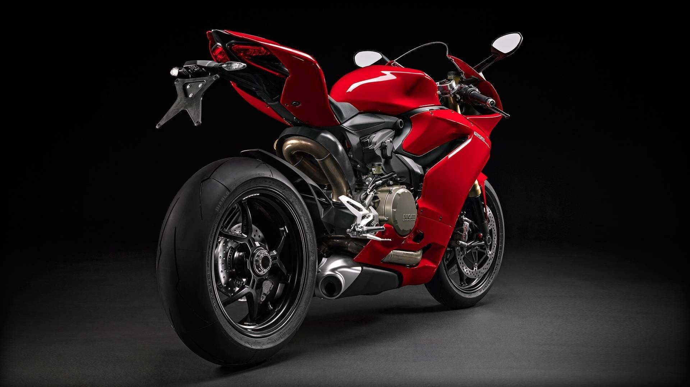
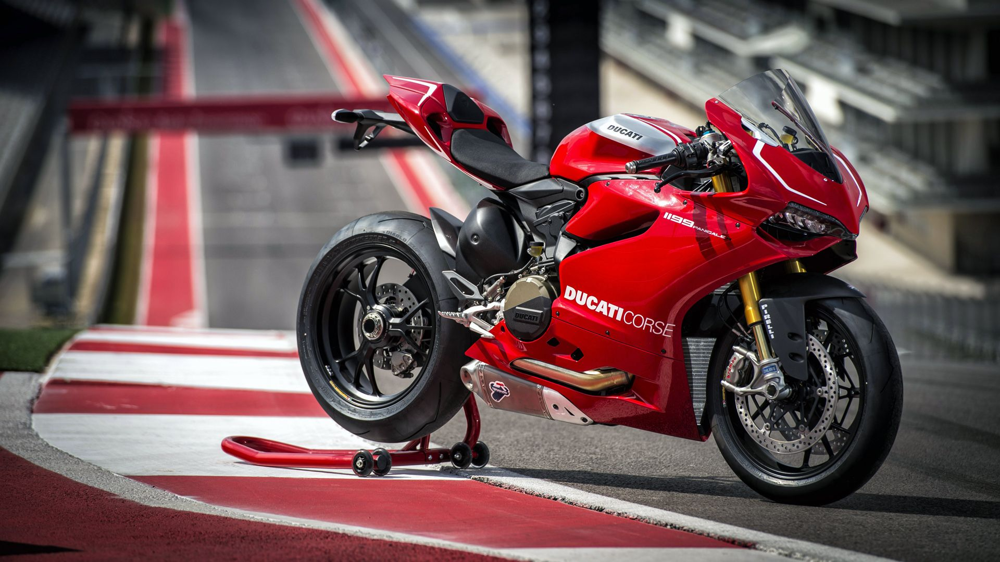
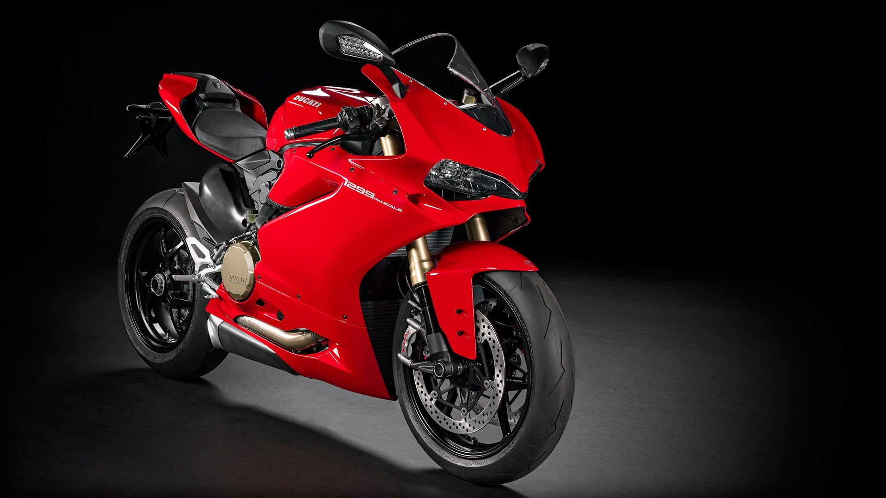
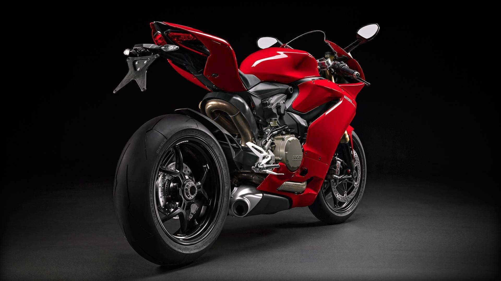
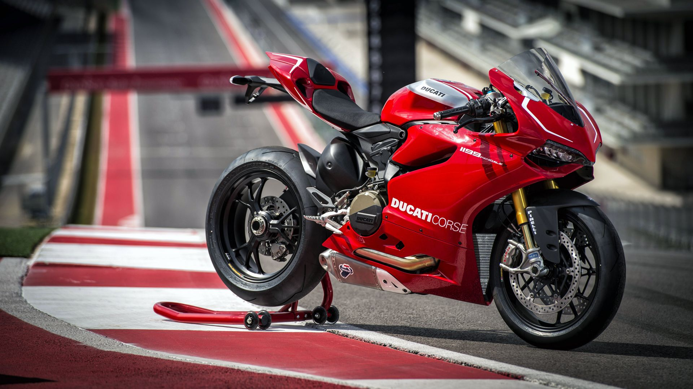

It is called Panigale V4 and it marks a new and important chapter in Ducati's history, a "symphony" of performance and emotions that's 100% Italian. Panigale V4 is the first mass-produced Ducati motorcycle to be equipped with a 4-cylinder engine, closely derived from the Desmosedici of the MotoGP.
 




